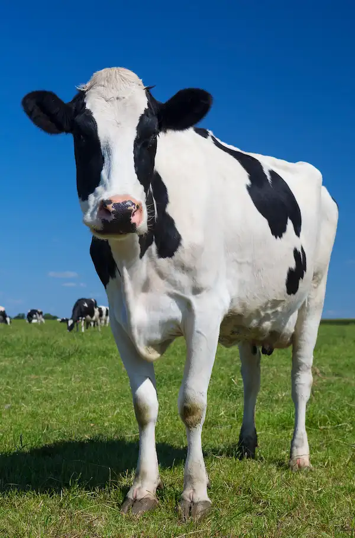
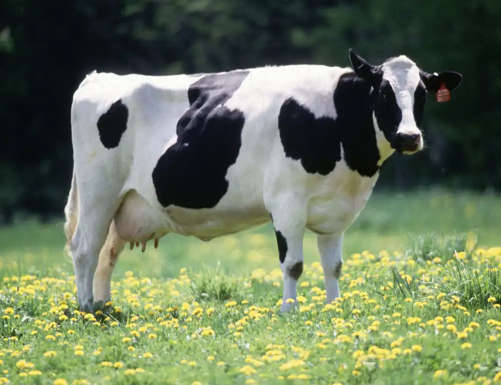

Essa espécie foi domesticada pelo homem e é utilizada em larga escala em muitas atividades como a produção de carne e de leite, representando grande importância para a economia de muitos países.
A criação de gado tem sido uma das principais causas do aumento do aquecimento global. Contribuindo com gases na atmosfera e desmatamento.
O gado doméstico descende do auroque na Europa e do gauro na Ásia. Sua domesticação teve início há mais de 5 000 e 6 000 anos atrás. Os bovinos domesticado tinham várias serventias para o ser humano: como animal de carga (assim como a cabra e os cavalos) e a produção de leite em vida e carne/couro após a morte. Era incomum a criação de gado para alimentação, a carne do animal era consumida apenas se ele morresse ou não tivesse mais utilidade.
Hoje em dia, os bovinos são os principais figurantes na indústria de produção de carne. A cadeia produtiva da carne está em vários ramos de negócios, desde a fabricação de ração e o ensino de profissionais qualificados (médicos veterinários, zootecnistas e agrônomos) até as empresas de consultoria em sistemas de comércio exterior.
“A vaca não é mais vista como um ser vivo pelo ser humano, e sim como um produto”
Setores como transportes, energia e agricultura são vistos como símbolos do aumento de gases do efeito estufa. No entanto, a pecuária, muitas vezes deixada em segundo plano, tem impacto igual ou superior quando o assunto são mudanças climáticas, e muitas pessoas estão parando de ingerir carne por causa disso. É o chamado vegetarianismo ambiental.
O impacto mais famoso que a criação de gado gera diretamente é a liberação de metano através do processo digestivo dos animais. No entanto, não é a única. As fezes destes animais, por exemplo, emitem óxido nitroso (N₂0), composto com grande potencial para contribuir com o efeito estufa. Para efeito de comparação, uma molécula de N₂0 equivale a 310 moléculas de dióxido de carbono (CO₂).